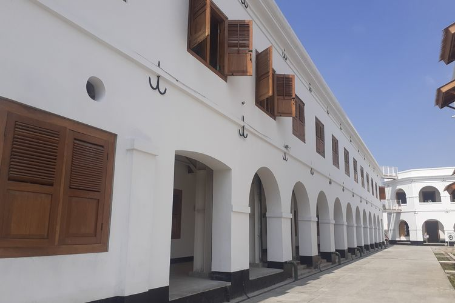

Benteng Van den Bosch (Benteng Pendem)
Benteng Van den Bosch, atau Benteng Pendem, dibangun oleh Belanda pada 1839–1845 di Kelurahan Pelem, Ngawi. Bangunan berukuran 165 m × 80 m dengan luas 15.000 m² ini terletak 1,5 km dari Alun-alun Ngawi.
Benteng ini memiliki lokasi strategis di dekat muara Sungai Bengawan Madiun dan dibuat lebih rendah dari tanah sekitarnya agar tersembunyi. Meskipun demikian, arsitektur Belanda yang canggih memastikan sistem drainase benteng tetap efektif, sehingga terhindar dari banjir.